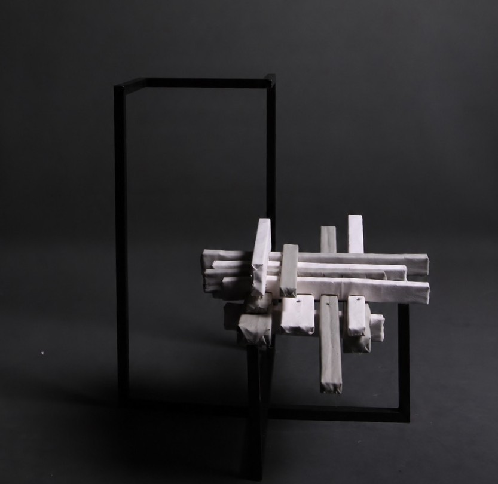
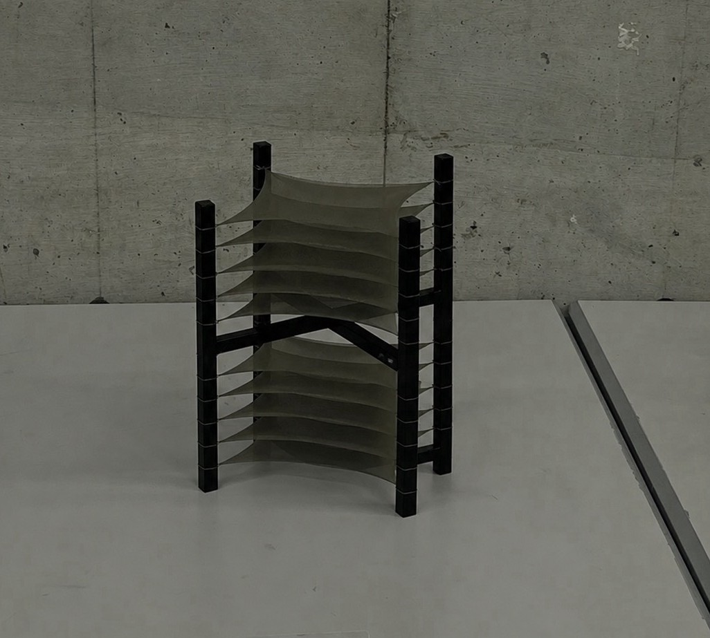

實踐工設 → 北市大學材
Gmail: cpeiyu616@gmail.com
專注於產品設計與材質結構創作。往下滑動瀏覽作品。
絲襪布、壓克力
藉由光影的位置移動及花朵的旋轉，使影子產生大小變化呈現花朵綻放的姿態。
非永久性電子元件的替換。
需更換永久性電子元件的地方底層不封死，在不影響美觀的前提下較易更換。
作品主體重量不均倒塌。
主體的燈箱為前凸式且須供電，將供電裝置外接於作品後方，不影響美觀且能平衡重量。
選用絲襪布材質是因其「透光性」，玫瑰花是以鐵絲製成骨架後包上絲襪布組合而成，光影呈現會因花瓣重疊程度而有深淺差異，使其看起來更有層次。

木條、鐵
利用長短不一的木條以錯位方式排列製成坐墊，製成一可做的支撐結構。
為使坐墊達成平衡不傾斜，木條的重量分布難以計算。
木條的卡榫設計因每層擺放方式不同（立著擺、躺著擺），凹槽深度難以計算。
解決方法：先將最底層木條固定於底座，再依序擺放後面幾層，確定擺放後不會傾倒再著手計算凹槽深度。
木頭、銅線、塑膠球
讓主體以錯位且看起來懸浮的方式呈現幾何。
上半部主體重量較重會使整體向後傾倒（上下部分主體位置不可對調，因呈現效果較不佳）。
上半部主體削掉一部分去平衡，塑膠球、銅線在下半部主體作配重。
當初設計時上半部主體並沒有削掉一角的想法，是在打磨木頭時意外削掉，索性將錯就錯多削一點，結果成品意外不錯也解決配重問題。

絲襪布、鐵、釣魚線
利用絲襪布的透光特質使作品從各個角度看起來因重疊比例不同呈現出不同深淺效果。
釣魚線綁在鐵架上易彈開及滑動。
用銼刀在欲綁線處劃出淺刻痕，使釣魚線能固定住。